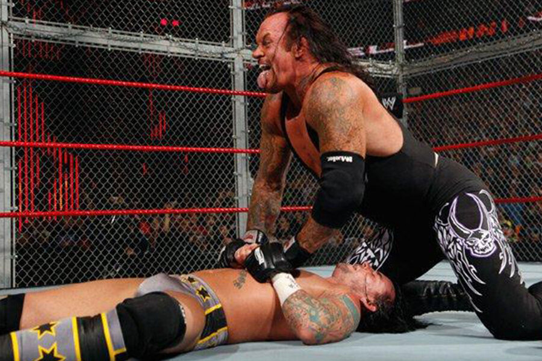
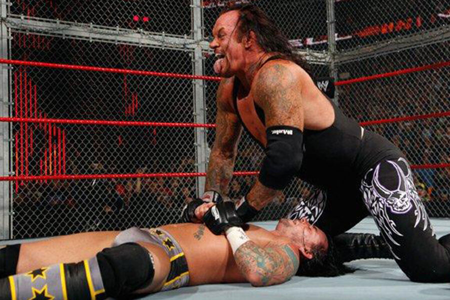
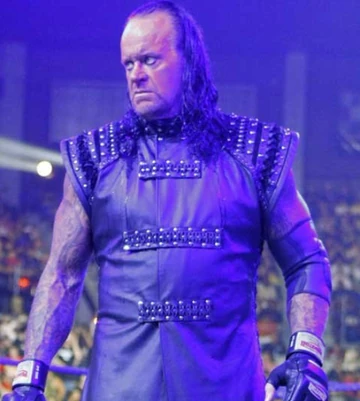
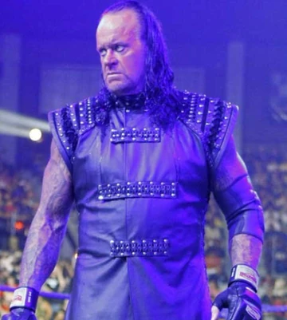

Videos
Undertaker VS Mankind Hell in a Cell match at King in the Ring 1998 [Full Match]
Undertaker VS Shawn Micheals Hell in a Cell match In your house 13: Badd Blood
Undertaker VS Kane at WrestleMania 14
Undertaker VS Triple H at WrestleMania 17
Undertaker VS Randy Orton at WrestleMania 21
Undertaker VS Shawn Micheals at WrestleMania 25
Undertaker VS Shawn Micheals at WrestleMania 26 (Streak VS Career Match)
Undertaker VS Triple H at WrestleMania 28 End of an Era inside Hell in a Cell with Shawn Micheals as Special Guest Referee
Undertaker VS CM Punk at WrestleMania 29 Taker's last greatest match for the legendary streak
Undertakar VS Brock Lesnar at SummerSlam 2015 : Taker's revenge
Undertaker VS Aj Styles at WrestleMania 36 part 1 Boneyard Match (Taker's last match)
Photos

 



 
